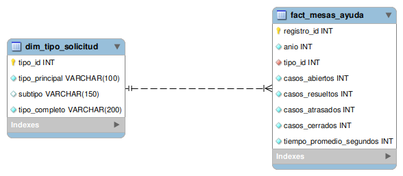

1. Descripción general
El objetivo del proyecto fue transformar un archivo CSV de origen abierto en una solución estructurada de análisis y visualización. Para ello se realizó un proceso de preparación de datos en Python/pandas, se diseñó un modelo relacional en MySQL y se construyó un dashboard en Streamlit para explorar los resultados.
El dataset original no representa tickets individuales, sino registros agregados por tipo de solicitud. Cada fila resume métricas como casos abiertos, resueltos, cerrados, atrasados y tiempo promedio de solución.
2. Flujo del proyecto
- Carga del CSV original en Python.
- Limpieza y renombrado de columnas.
- Separación de
tipo_solicitudentipo_principal,subtipoytipo_completo. - Conversión de
tiempo_promedioatiempo_promedio_segundos. - Construcción de
dim_tipo_solicitudyfact_mesas_ayuda.
- Implementación del modelo relacional en MySQL.
- Definición de claves primarias y foránea.
- Validación de carga y consistencia con consultas SQL.
- Construcción de dashboard en Streamlit.
- Organización y documentación final en GitHub.
3. Modelo entidad-relación / modelo relacional
El modelo implementado en MySQL se compone de una dimensión y una tabla de hechos:
- dim_tipo_solicitud: catálogo de tipos de solicitud.
- fact_mesas_ayuda: métricas agregadas por categoría.
La relación principal es: dim_tipo_solicitud (1) → (N) fact_mesas_ayuda.

Diagrama exportado desde MySQL Workbench.
4. Hallazgos principales
- La categoría con mayor carga de casos es Acceso.
- El tipo completo con mayor número de casos es Acceso > SICAU.
- Se detectó una anomalía reportable en Acompañamiento, con tasa de resolución superior al 100%.
- También se observaron pequeñas diferencias entre casos abiertos y cerrados en categorías como Software y Redes.
5. Tecnologías utilizadas
- Python
- pandas
- MySQL
- MySQL Workbench
- Streamlit
- Git
- GitHub
- Google Colab / VS Code
6. Archivos principales
7. Estado actual
Actualmente el proyecto cuenta con preparación de datos, implementación relacional en MySQL, consultas de validación, repositorio organizado en GitHub y una primera versión funcional del dashboard.
Como trabajo futuro, se puede continuar con el pulido visual del dashboard, el ajuste fino del README y una publicación más formal de la capa de visualización.